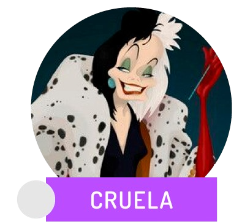
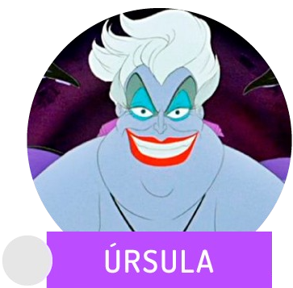
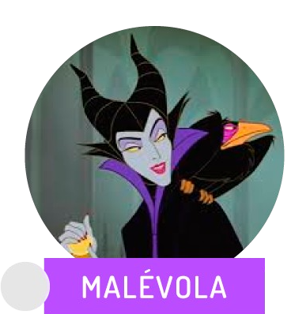

-
Cruella
101 dalmatas
Descriçao
É a antagonista principal ícone da franquia 101 Dálmatas. Ela é uma rica, herdeira da moda, obcecada que deseja usar as peles de 99 filhotes de dálmatas para um casaco de pele. Devido a personalidade vaidosa, egocêntrica, egoísta, extravagante e sofre de mudanças de humor violentas.
-
Úrsula
Pequena Sereia
Descriçao
É a principal antagonista do filme da Disney de 1989, A Pequena Sereia. Úrsula é uma vilã muito escura e sinistra, com um perverso senso de humor. Úrsula é muito manipuladora e tem um talento para fazer as pessoas fecharam seus acordos.
-
Malevola
Bela adormecida
Descriçao
É uma personagem fictícia e a principal antagonista do filme da Disney de 1959, A Bela Adormecida. Malévola representa pura maldade. Ela é cruel e desonesta, e fará o que for preciso para alcançar seus "maus" objetivos.